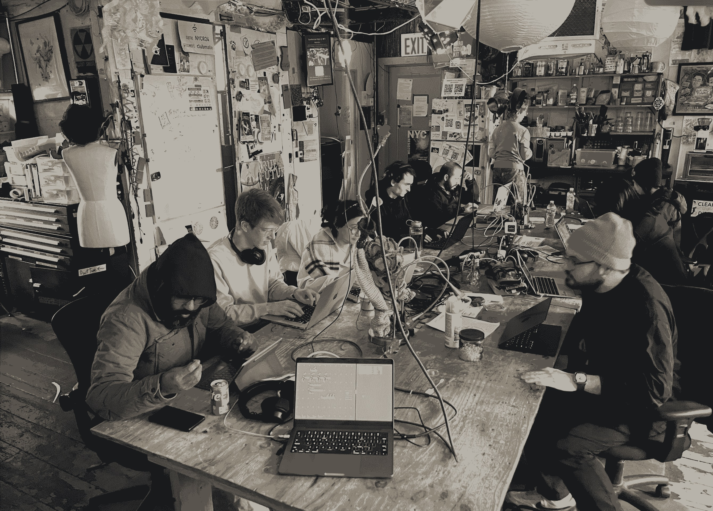
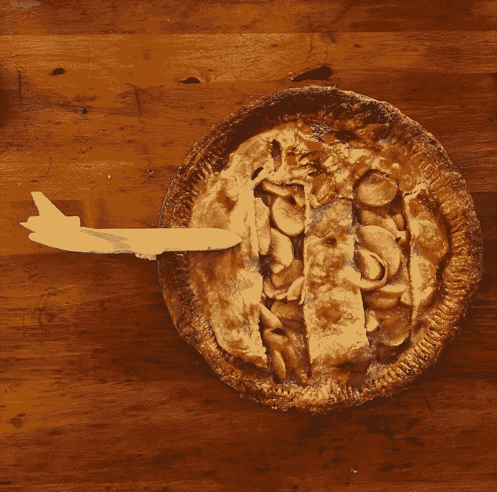

Here are a few of the Arbrassons I've made with help from Daniel! I've been working with Daniel as an assistant mostly, learning how to make daxophones and design pcbs and enclosures for solar sounders. Woodworking has been very fun. I really like using the planar, and the japanese style hand planes. I'm ready to step up my synth box game now for sure. Also no longer afraid of the table saw. So far my philosophy remains anti-miter and anti-dovetail. AND anti-resin, unless its for a cuprobrassum (led window).
2024-12-14
Orca Workshop @ NYC Resistor

2024-09-26
cancelled.work
cancelled.work is a community of people in the local provicence, RI and boston MA area. It started based on the idea me and Grief had for a server co-op where local artists can host their site or have pages on a local web board. Its an homage to early internet, webrings, neocities etc. with a focus on being a wiki, archive comment board and media hosting platform for local artists. There server lives at grove st in providence, RI.
2024-06-27
Orca Workshop at Red Eel
2024-06-09
Waterworks Festival
Waterworks festival presented by Non-Event is a festival of experimental sound preformed at the Metropolitan Waterworks Museum. The Waterworks Museum interprets the unique stories of one of the country's first metropolitan water systems through exhibitions and educational programs on engineering, architecture, social history, public health, and Safe Water Access. This space presents incredible acoustics for acoustic and electronic performances. I am always thinking about transforming spaces with sound and this was a unique opportuniy where the space truely transformed my sound and the way I perform. Space and acoustics are extremely important to the work I do as sadnoise and this is a wonderful example of reverb, reflections and natural acoustics in conversation with experimental electronics. Watch the full performance here.
This is the second iteration of Dogevox. Dogevox is a collectionn of different ciat lonbarde pcbs: The Lil Sidrassi, Dogvoice and Rolz (4 and 6). I had a lot of fun with this build. The box is a cohiba cigar box, with the sides sawn off and walnut panels screwed in. The top is a custom collage with sharpie drawn to find the perfect 5ths for the layout of the jacks. Lil Sidrassi and rolz is a perfect pair, and offers so much range, especially with the 12 position switches for the hairy caps on lil sid. In the future I think I'de choose some more random values for the rolz, and make led windows out of resin instead of put them right through the top.
Welcome to the first installation of SRST Sessions. SRST Sessions is a video series highlighting local artists in Providence, RI in an attempt to bridge the gap between music academia at RISD and Brown and the local music scene in providence and the surrounding areas. The SRST or the Studio for Research in Sound and Technology is a 25.4 channel speaker array at RISD used primarily for teaching spatial audio and ambisonics, but has become a space for practice, performance and exploration over the years.
Artist Bio: Cryptwarblr (Alex Bernhardt) is a circuit-bending project investigating bent ROM data in a Casio MT-240 synthesizer. Using homemade patch-bay-and-switchboard array controllers, data carrying lines between the ROM & CPU can be cross-connected in various combinations for unusual sonic effects. These combinations can affect timbre, pitch, adsr, tremolo, gliss, texture, pattern, chord, and tuning, in a bizarre but repeatable way, as long as electric parameters are consistent. Alex’s research in electronics is in how to achieve precise control over small levels of resistance in order to clearly define logic levels across the types of cross-connection combinations. To facilitate music-making, Alex has developed their own hybrid music-electrical notation system and has cataloged hundreds of cross-connections. Their music weaves between combinations of connections in an attempt to explore a sonic landscape painted by the instrument’s offerings.
These events are organized and curated by Femi Shonuga-Fleming with special thanks to Shawn Greenlee, Mark Cetilia and all of the wonderful artists in this series including Cryptwarbler for kicking off the series!
2023-09-11
911 Apple Pie
made with stolen apples from the apple tree that no one ever picks from, the apples go bad every year, so i stole all of them this year.

2023-04-22
Studio for Research in Sound and Technology
2023-03-21
I think granular synthesis is a good form of synthesis to relate sound and manipulate sound with the idea of the organic in mind. In simple words, granular synthesis is a form of audio synthesis that operates on the microsound time scale, meaning less than a second. You start with a source audio and various synthesis techniques can be used to chop this audio up into small samples or grains that make up the audio. These individual grains can then be repeated over and over as you slowly scan through the set of grains to stretch the audio out and manipulate the audio as if it were putty or dough that you're stretching across a surface. You can change the size of the grains, and overlap the grains to create unique soundscapes and completely rework the original audio.
I'm drawn to this form of experimenting with audio in this project in particular because as a concept, it's related to nature, generation and generativeness, an initial state of being, and evolution over time.
Granular synthesis reminds me of grains of sand. The wind blows grains of sand in the wind to create a new portrait in the ground. recorded audio is a trim and cut/sample of that moment in time.
representing sound visually, sand and dust
of relation to minimalism and minimalistic moves within composition
Granular synthesis reminds me of evolution. You start with a set of genes, that is your audio, your initial state, first generation, and as you stretch that state, that initial audio over time, the longer the audio is stretched, the audio adapts to itself and has to inevitably evolve into a new form of being.
Granular synthesis reminds me of raindrops in a storm. Microsound in repetition as time stretches is essentially a ritual practice as the longer the audio is stretched the more the repetition of elements of the audio and the longer the ritual practice.
2023-01-23
SAT 22 April 2023; Cold Spring, NY; Bull Hill
A celebration for our Mother Earth, in the form of a low-impact walk, and performance.
2 miles from the Cold Spring Hudson Line station, near the Cornish Estate Ruins.
Live coding spells will take place in the woods.
Special thanks to Mark Denardo for organizing a beautiful event
2022-08-05
Blast Radio Summer Series
2022-11-04
Ref Mag
2022-06-07
Research in Spatial Audio assisting Shawn Greenlee and Nick Thompson
Foafx - A command line tool for applying spatially positioned audio effects to first order ambisonic sound files
foafx is a command line tool for applying spatially positioned audio effects to first order ambisonic sound files. It is written with Elementary, a JavaScript framework for writing audio applications, and uses its offline-renderer package.
As its input, foafx expects a B-format, 4-channel first order ambisonic encoded file with ACN channel ordering. It supports file normalization either in SN3D or N3D formats.
In order to apply a chosen effect, foafx decodes the B-format file using a simple Sampling Ambisonic Decoder (SAD) into an octahedral arrangement with six vertices that represent virtual microphone positions. Then, the effect is applied with the specified parameters including its spatial position (azimuth and elevation). After effect processing, the six signals are encoded back to B-format, panned to the matching octahedral positions of the decoder, and rendered to an output file. The result is an ambisonic wet/dry effect mix with wet focussed in a specific area of the sound field.
2022-04-06
Local musicians look to 'demystify' live coding with New Haven music festival
2022-03-22
Documentation of the Moog, Buchla and Serge Modular Synthesizers at the Computer Music Center at Columbia University